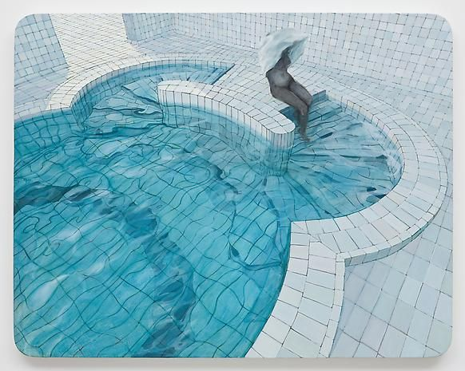
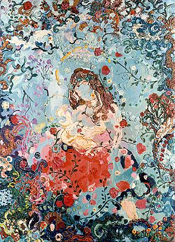
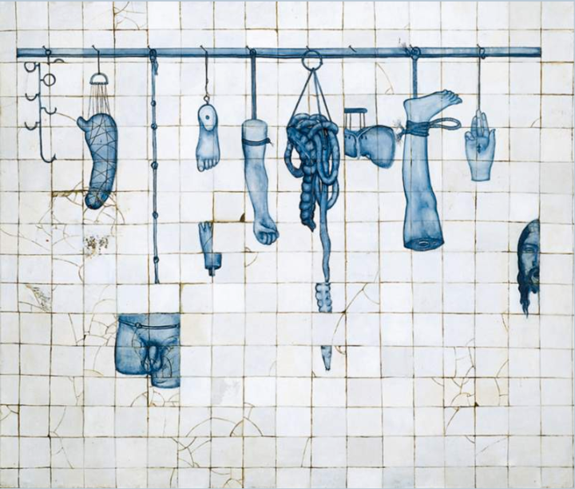
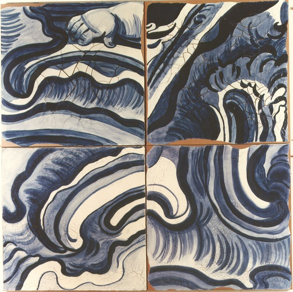
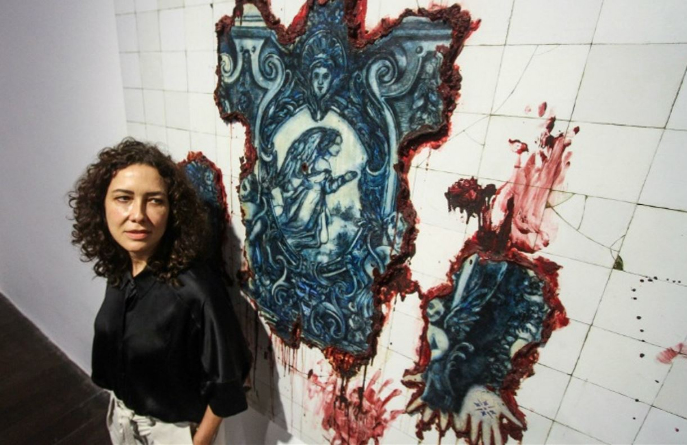
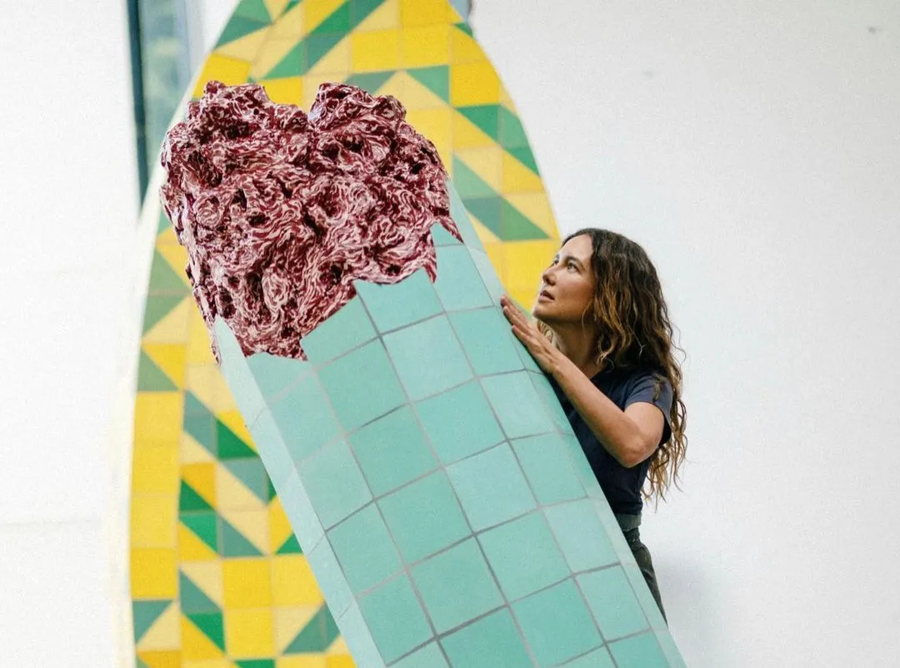
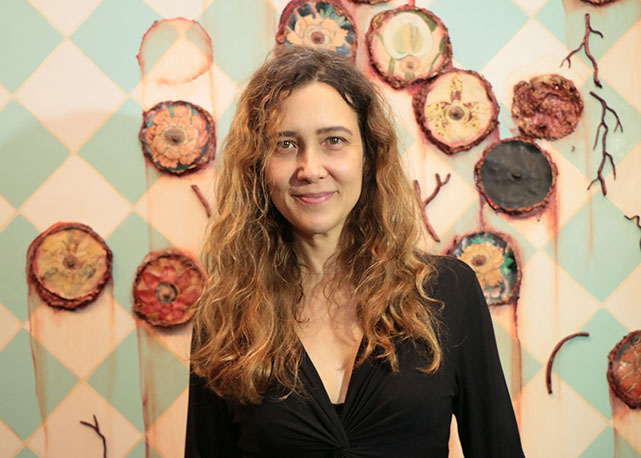

Projeto de história da arte
Publicidade e Propaganda 1° Semestre - Senac Nações Unidas
Uma das mais importantes artistas plásticas contemporâneas brasileiras,
conhecida por explorar história, corpo e memória em suas obras.
Adriana Varejão (1964, Rio de Janeiro) é uma das principais artistas contemporâneas do Brasil, com reconhecimento internacional. Filha de um piloto da aeronáutica e de uma nutricionista fez cursinho pré-vestibular no colégio Impacto. Foi cursar engenharia na Puc. No meio tempo, fez cursos de arte. E pronto. “Acho que um dia eu acordei e virei artista”, brinca. Alugou um ateliê e começou a produzir.
Iniciou sua formação na Escola de Artes Visuais do Parque Lage nos anos 1980 e realizou sua primeira exposição individual em 1988. Sua obra se destaca pelo caráter visceral, explorando temas como colonização, barroco, azulejaria e o corpo humano, com representações de carne e interiores. Ganhou projeção nos anos 1990 ao participar de importantes exposições, como a Bienal de São Paulo e outras bienais internacionais.
Atualmente, tem obras em coleções de grandes museus e é amplamente valorizada no mercado de arte. No Brasil, possui um pavilhão dedicado ao seu trabalho no Instituto Inhotim.
A densidade simbólica de Adriana Varejão é tanta que escandaliza os espectadores, mas ao mesmo tempo é responsável pela conquista de admiração e respeito cada vez maiores nos cenários internacionais da arte.
O estilo artístico de Adriana Varejão é marcado por uma estética visceral e crítica, unindo pintura contemporânea, barroco e referências coloniais. Ela utiliza temas como a azulejaria portuguesa, carnes, vísceras e fissuras para explorar temas como o colonialismo, a miscigenação e a violência na história brasileira, criando obras tridimensionais que desafiam o espectador.
Uso frequente de representações de carne crua, vísceras e sangue (esculturas e pinturas), simbolizando a violência física e o trauma da colonização.
A artista reinterpreta azulejos portugueses e elementos do barroco mineiro, simulando superfícies com craquelês e técnicas de trompe l'oeil para enganar os sentidos.
Suas obras questionam a narrativa histórica oficial, destacando a miscigenação, o apagamento cultural e a brutalidade da escravidão.

A série Saunas e Banhos (2009) de Adriana Varejão apresenta pinturas a óleo de espaços arquitetônicos azulejados, límpidos e assépticos, focando na geometria e na luz. Diferente de obras anteriores com vísceras, esta série evoca a intimidade, o banho e o cuidado corporal, explorando a tradição pictórica e a perspectiva.

Natividade" (1987) é uma das primeiras obras de Adriana Varejão, pintada aos 23 anos após uma viagem a Minas Gerais, marcando o início de sua investigação sobre o Barroco brasileiro. A obra utiliza tintas a óleo espessas para criar texturas tridimensionais, retratando temas coloniais com uma visceralidade que antecipa sua famosa série de "azulejos" que revelam carne e sangue.

A obra representa a colonização brasileira de forma visceral e crítica, utilizando a metáfora do "varal" para expor, em carne viva, a violência, a miscigenação e a história colonial. A obra fragmenta o corpo e a história, alinhando-se à estética barroca de entranhas expostas.

"Azulejões" é uma instalação icônica de Adriana Varejão composta por 100 telas grandes (cada), pintadas a óleo para simular azulejos portugueses. A obra transforma o azulejo, símbolo colonial, em uma "arquitetura virtual" de mar e azul, explorando temas de identidade, história brasileira e a substituição de azulejos originais por réplicas.



Crítica e Relevância
Adriana Varejão crítica a narrativa oficial da colonização portuguesa no Brasil, focando na violência, no racismo estrutural e na exploração sexual. Suas obras expõem as "feridas" históricas, utilizando o barroco, azulejos e corpos dilacerados para questionar a formação da identidade brasileira e o legado colonial, muitas vezes com imagens viscerais que denunciam a brutalidade.
É uma das artistas contemporâneas mais influentes do Brasil e do mundo. Tem presença marcante no mercado de arte, com obras em coleções importantes, como a Tate Modern (Londres), Guggenheim (Nova York) e a Fundação Cartier (Paris), além de prêmios como a medalha de Chevalier de l'Ordre des Arts et des Lettres da França. A artista possui um pavilhão dedicado às suas obras no Instituto Inhotim, considerado o maior museu a céu aberto do mundo.
https://www.escritoriodearte.com/artista/adriana-varejao
https://enciclopedia.itaucultural.org.br/obras/93247-varal
https://enciclopedia.itaucultural.org.br/obras/105136-natividade
https://revistacontinente.com.br/edicoes/223/adriana-varejao
https://www.instagram.com/p/CvaRnk9pumw/
https://www.galerialiviadoblas.com.br/blog/a-carreira-critica-da-polemica-adriana-varejao/
https://arteref.com/arte-contemporanea/adriana-varejao-biografia-e-principais-obras/